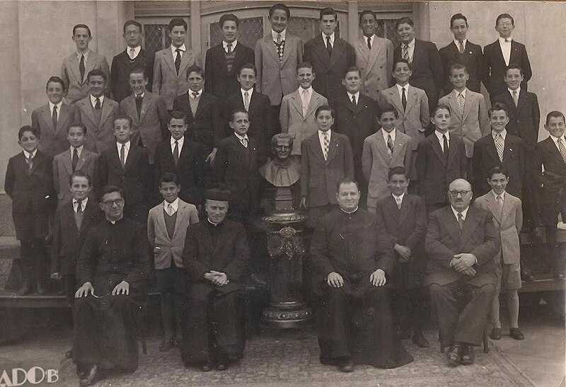

Jorge Mario Bergoglio nasceu numa família de imigrantes italianos. O seu pai, Mario Giuseppe Bergoglio Vasallo, nascido em Portacomaro em 2 de abril de 1908 e falecido em 1959, era um trabalhador ferroviário e sua mãe, Regina Maria Sivori Gogna, nascida em Buenos Aires, de pais genoveses, em 28 de novembro de 1911 e falecida em 8 de janeiro de 1981, era dona de casa. Os dois se casaram em Buenos Aires no dia 12 de dezembro de 1935. Mario Giuseppe também jogava basquetebol no San Lorenzo, um dos cinco grandes do futebol argentino e cujas origens haviam sido impulsionadas por um padre. Jorge tornar-se-ia torcedor sanlorencista, já tendo afirmado que não perdeu nenhum jogo do título argentino de 1946, quando tinha então dez anos. Em carta aos dirigentes do clube que o visitaram uma semana após tornar-se Papa, relembrou: "Tem vindo à minha memória belas recordações, começando desde a minha infância. Segui, aos dez anos, a gloriosa campanha de 1946. Aquele gol de Pontoni!".
Nascido e criado no bairro de Flores,[10] atual sede do San Lorenzo, o Papa Francisco é o mais velho de cinco filhos, tendo como irmãos: Oscar Adrian Bergoglio (nascido em 30 de janeiro de 1938 e já falecido), Marta Regina Bergoglio (nascida em 24 de agosto de 1940 e falecida em 11 de julho de 2007), Alberto Horacio Bergoglio (nascido em 17 de julho de 1942 e falecido em 15 de junho de 2010) e Maria Elena Bergoglio (nascida em 7 de fevereiro de 1948). Inicialmente, alguns órgãos de mídia teriam afirmado que Jorge Bergoglio fez graduação e mestrado em química, na Universidade de Buenos Aires, porém mais tarde se verificou que esta informação era incorreta, ele tendo apenas um diploma técnico em química pela Escuela Técnica Industrial N° 27 Hipólito Yrigoyen. Na juventude, teve uma doença respiratória que numa operação de remoção lhe fez perder um pulmão. Durante a sua adolescência, teve uma namorada, Amalia. Segundo ela, Bergoglio chegou a pedi-la em casamento durante a época, tendo ele inclusive afirmado que, do contrário, se tornaria padre.